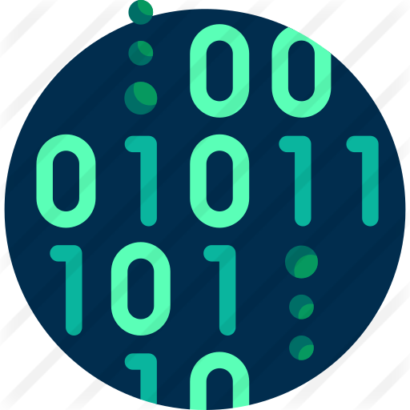

Tentang Informatika
Program Studi S1 Informatika (PSIF) di Institut Teknologi Del (IT Del) memiliki cakupan bidang ilmu (body of knowledge) meliputi area ilmu komputer (Computer Science), rekayasa perangkat lunak (Software Engineering), keamanan siber (Cybersecurity), dan ilmu data (Data Science). Lulusan dari PSIF dipersiapkan untuk dapat memiliki kemampuan analisis persoalan yang terkait bidang computer science dan pengembangan perangkat lunak mulai dari yang sederhana yang sampai yang kompleks ataupun berskala besar.
SelengkapnyaVisi & Misi
- Visi
- “Menjadi program Teknik Informatika yang unggul yang berperan dalam menghasilkan dan memanfaatkan teknologi untuk mengembangkan potensi lokal bagi kemajuan bangsa pada tahun 2023.”
- Misi
-
- Menyelenggarakan pendidikan teknik informatika yang bermutu, profesional, dan diperhitungkan secara nasional.
- Menyelenggarakan penelitian yang menghasilkan dan memanfaatkan teknologi untuk mengembangkan potensi lokal.
- Melakukan pengabdian kepada masyarakat dalam bidang teknik informatika.
Himpunan Mahasiswa
HIMASTI adalah wadah bagi mahasiswa S1 Informatika untuk berkreasi, berinovasi dan mengembangkaan minat dan bakat khususnya pada bidang teknik informatika. HIMASTI memiliki tujuan untuk mewujudkan mahasiswa Program Studi S1 Informatika yang beriman dan bertakwa, mandiri dan jujur dalam bersikap, dan sebagai wadah kreatifitas yang berprestasi dan mengoptimalkan kinerja serta menjungjung tinggi nilai kekeluargaan.
Arie Satia Dharma, S.T, M.Kom
Kaprodi S1 Informatika
Bapak Arie Satia Dharma, S.T, M.Kom merupakan ketua program studi Sarjana Informatika dan ketua senat Fakultas Informatika dan Teknik Elektro. Beliau adalah lulusan S1 Teknik Elektro Universitas Kristen Maranatha dan S2 Teknik Informatika USU. Beliau mulai menjabat sebagai ketua program studi S1 informatika pada tahun 2020.